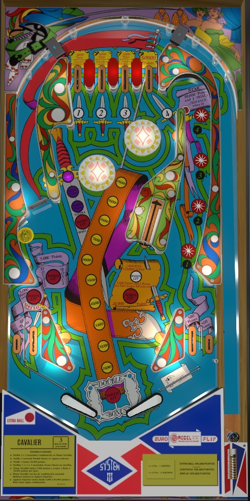

Cavalier is the 4-player version. Swashbuckler is a 1-player version with identical rules and scoring.
Make the #1 or #3 top lanes to light the vary-target, then shoot it repeatedly to build the end of ball bonus. You can also plunge the #2 top lane to light the lower left saucer for Double Bonus. The left orbit gets you back to the top lanes mid-ball. The vary-target always advances the bonus, but when lit white it also advances the upper left saucer up to a potential value of 85,000 points and an extra ball. Lighting 1-2-3-4 numbers lights the right star rollovers for bonus advances.
The below picture of Cavalier's playfield was taken from the VPX recreation by Nestorgian et al.

The top lanes are numbered 1 through 4. Making an unlit lane lights it. Top lanes have the same scoring effects whether they are lit or not.
Lanes #1 and #3 score 5,000 points and light the vary-target white. The vary-target is explained more below.
Lane #2 scores 5,000 points and lights the lower left saucer for Double Bonus.
Lane #4 scores 50,000 points but does not affect any other features.
The vary-target can be pushed in to any of 6 different levels. When completely unlit, the vary-target scores 3,000 points and a bonus advance for each level it was pushed in, then resets. If the base bonus is maxed out at 150,000 points, the vary-target is lit red, meaning each step it is pushed in scores 20,000 points instead.
When the vary-target is lit white after making either the #1 or #3 top lane, each level that the vary-target is pushed in will advance the "combination value" at the upper left saucer, which is accessed by shooting between the spinner lane and the left pop bumper. The upper left saucer always scores 5,000 points plus the combination value. The combination value is advanced in the sequence 30,000 - 50,000 - 80,000 - extra ball - 30,000 plus extra ball - 50,000 plus extra ball - 80,000 plus extra ball. Collecting any combination value from the saucer resets it, making the saucer worth just the base 5,000 points.
When the vary-target is lit white, it also "advances" which 1-2-3-4 numbers are lit with each vary-target level. This is not done in a conventional manner; rather, the 1-2-3-4 lights are treated like a binary counter, with each advance working toward lighting higher numbers in the 1-2-3-4 sequence. If all of 1-2-3-4 are lit at once, the left in lane is lit for Special.
Scores 5,000 points, plus awarding Double Bonus if the #2 top lane has been made at any point this ball.
Score 10,000 points, plus a bonus advance if they are lit. The 4 star rollovers correspond to the numbers 1-2-3-4 collected at the top lanes or through vary-target advances.
Always scores 100 points per spin and leads back to the top of the table.
Cavalier has a conventional in/out lane setup. The left in lane scores 5,000 points, plus a Special when lit by lighting all of 1-2-3-4. All other bottom lanes score 500 points only. The right in/out lane rail is cut off, allowing a right out lane ball to be nudged back into play, but also allowing a ball to roll up the right flipper and fall into the out lane.
Bonus is advanced once for each level the vary-target is pushed in, or each lit right star rollover. Bonus is doubled by making top lane #2, then shooting the lower left saucer. Max bonus is 2x 150,000 = 300,000 points. There is no mid-ball bonus collect or bonus carryover of any kind.